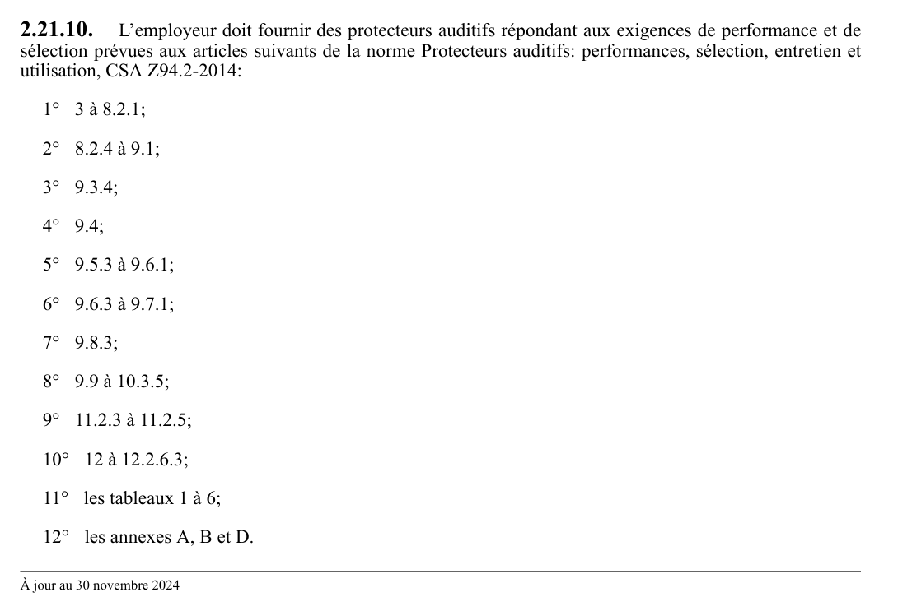

art-2.21.10-CSTC : l'employeur doit fournir des protecteurs auditifs répondant
L'employeur doit fournir des protecteurs auditifs répondant aux exigences de performance et de sélection prévues aux articles suivants de la norme Protecteurs auditifs: performances, sélection, entretien et utilisation, CSA Z94.2-2014: 1° 3 à 8.2.1;
🌐 LegisQuébec · 📄 PDF officiel
Texte officiel
L’employeur doit fournir des protecteurs auditifs répondant aux exigences de performance et de sélection prévues aux articles suivants de la norme Protecteurs auditifs: performances, sélection, entretien et utilisation, CSA Z94.2-2014:
1° 3 à 8.2.1;
2° 8.2.4 à 9.1;
3° 9.3.4;
4° 9.4;
5° 9.5.3 à 9.6.1;
6° 9.6.3 à 9.7.1;
7° 9.8.3;
8° 9.9 à 10.3.5;
9° 11.2.3 à 11.2.5;
10° 12 à 12.2.6.3;
11° les tableaux 1 à 6;
12° les annexes A, B et D.
Aux fins de l’application de l’article 9.6.4.3 de cette norme, le résultat d’un mesurage effectué conformément à l’article 2.21.8 peut être utilisé comme mesure de l’exposition au bruit du travailleur, soit la valeur équivalente à L ou L .
Ce mesurage n’est pas obligatoire lorsque l’employeur choisit un protecteur auditif selon la méthode de l’indice à nombre unique prévue à cette norme.
L’employeur peut également fournir des protecteurs auditifs qui répondent:
1° aux exigences de performance prévues aux articles suivants de la norme Protecteurs individuels contre le bruit - Exigences générales ou Exigences de sécurité et essais, selon le cas:
a) 1 à 6 et les annexes A et ZA de la Partie 1: Serre-tête, NF EN 352-1;
b) 1 à 6 et les annexes A et ZA de la Partie 2: Bouchons d’oreille, NF EN 352-2;
c) 1 à 6 et les annexes A et ZA de la Partie 3: Serre-tête montés sur casque de protection pour l’industrie, NF EN 352-3;
d) 1 à 7 et les annexes A, B et ZA de la Partie 4: Serre-tête à atténuation dépendante du niveau, NF EN 352-4;
e) 1 à 7 et les annexes A, B et ZA de la Partie 5: Serre-tête à atténuation active du bruit, NF EN 352-5;
f) 1 à 7 et les annexes A, B et ZA de la Partie 6: Serre-tête avec entrée audio-électrique, NF EN 352-6;
g) 1 à 7 et les annexes A, B et ZA de la Partie 7: Bouchons d’oreilles à atténuation dépendante du niveau, NF EN 352-7; et;
2° aux exigences de sélection prévues aux articles suivants de la norme Protecteurs individuels contre le bruit – Recommandations relatives à la sélection, à l’utilisation, aux précautions d’emploi et à l’entretien – Document guide, NF EN 458 2016:
a) 3 à 4;
b) 6 à 6.2.1;
c) 6.2.3 à 6.5;
d) 6.8 à 6.9.2;
e) les annexes A à E.
Aux fins de l’application de l’article 6.2.3.2 et de l’annexe B de la norme NF EN 458: 2016, le résultat d’un mesurage effectué conformément à l’article 2.21.8 peut être utilisé comme mesure de la pression acoustique de crête.
Un protecteur auditif satisfait aux obligations du présent article s’il est conforme à la version la plus récente ou à la version antérieure d’une norme qui y est prévue et s’il n’a pas atteint la date d’expiration prévue par le fabricant, le cas échéant.
Texte de l’article 2.21.10 CSTC, extrait de la couche texte du PDF officiel (page 48), sans OCR ni retouche. La capture ci-dessous et le PDF font foi.
{kind=link}

Toucher l'image pour l'agrandir🔗 CSTC.pdf : page 48 · texte à jour au 30 novembre 2024
📚 Source légale : D. 781-2021, a. 2. · LégisQuébec
Voir aussi
- art. 2.21.9
- art. 2.21.11
- ⚖️ Loi habilitante : LSST
- ↑ Section 2 : Dispositions générales
Pages qui pointent ici (4)
- art-2.21.11-CSTC : les protecteurs auditifs fournis à un travailleur Recueil législatif
- art-2.21.5-CSTC : l'employeur doit réduire le temps d'exposition quotidienne Recueil législatif
- art-2.21.9-CSTC : le mesurage du niveau d'exposition quotidienne au Recueil législatif
- CSTC : Section 2 : Dispositions générales Recueil législatif